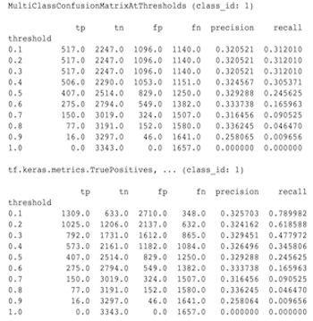

Tensorflow Model Analysis Frequently Asked Questions¶
General¶
Is an EvalSavedModel still required?¶
Previously TFMA required all metrics to be stored within a tensorflow graph
using a special EvalSavedModel. Now, metrics can be computed outside of the TF
graph using beam.CombineFn implementations.
Some of the main differences are:
- An
EvalSavedModelrequires a special export from the trainer whereas a serving model can be used without any changes required to the training code. - When an
EvalSavedModelis used, any metrics added at training time are automatically available at evaluation time. Without anEvalSavedModelthese metrics must be re-added.- The exception to this rule is if a keras model is used the metrics can also be added automatically because keras saves the metric information along side of the saved model.
NOTE: There are some metrics that are only supported using combiners (e.g. multi-class/multi-label plots, aggregated multi-clas/multi-label metrics, etc).
Can TFMA work with both in-graph metrics and external metrics?¶
TFMA allows a hybrid approach to be used where some metrics can be computed
in-graph where as others can be computed outside. If you currently have an
EvalSavedModel then you can continue to use it.
There are two cases:
- Use TFMA
EvalSavedModelfor both feature extraction and metric computations but also add additional combiner-based metrics. In this case you would get all the in-graph metrics from theEvalSavedModelalong with any additional metrics from the combiner-based that might not have been previously supported. - Use TFMA
EvalSavedModelfor feature/prediction extraction but use combiner-based metrics for all metrics computations. This mode is useful if there are feature transformations present in theEvalSavedModelthat you would like to use for slicing, but prefer to perform all metric computations outside the graph.
Setup¶
What model types are supported?¶
TFMA supports keras models, models based on generic TF2 signature APIs, as well
TF estimator based models (although depending on the use case the estimator
based models may require an EvalSavedModel to be used).
See get started guide for the full list of model types supported and any restrictions.
How do I setup TFMA to work with a native keras based model?¶
The following is an example config for a keras model based on the following assumptions:
- Saved model is for serving and uses the signature name
serving_default(this can be changed usingmodel_specs[0].signature_name). - Built in metrics from
model.compile(...)should be evaluated (this can be disabled viaoptions.include_default_metricwithin the tfma.EvalConfig).
from google.protobuf import text_format
config = text_format.Parse("""
model_specs {
label_key: "<label-key>"
example_weight_key: "<example-weight-key>"
}
metrics_specs {
# Add metrics here. For example:
# metrics { class_name: "ConfusionMatrixPlot" }
# metrics { class_name: "CalibrationPlot" }
}
slicing_specs {}
""", tfma.EvalConfig())
See metrics for more information about other types of metrics that can be configured.
How do I setup TFMA to work with a generic TF2 signatures based model?¶
The following is an example config for a generic TF2 model. Below,
signature_name is the name of the specific signature that should be used for
evaluation.
from google.protobuf import text_format
config = text_format.Parse("""
model_specs {
signature_name: "<signature-name>"
label_key: "<label-key>"
example_weight_key: "<example-weight-key>"
}
metrics_specs {
# Add metrics here. For example:
# metrics { class_name: "BinaryCrossentropy" }
# metrics { class_name: "ConfusionMatrixPlot" }
# metrics { class_name: "CalibrationPlot" }
}
slicing_specs {}
""", tfma.EvalConfig())
See metrics for more information about other types of metrics that can be configured.
How do I setup TFMA to work with an estimator based model?¶
In this case there are three choices.
Option1: Use Serving Model
If this option is used then any metrics added during training will NOT be included in the evaluation.
The following is an example config assuming serving_default is the signature
name used:
from google.protobuf import text_format
config = text_format.Parse("""
model_specs {
label_key: "<label-key>"
example_weight_key: "<example-weight-key>"
}
metrics_specs {
# Add metrics here.
}
slicing_specs {}
""", tfma.EvalConfig())
See metrics for more information about other types of metrics that can be configured.
Option2: Use EvalSavedModel along with additional combiner-based metrics
In this case, use EvalSavedModel for both feature / prediction extraction and
evaluation and also add additional combiner based metrics.
The following is an example config:
from google.protobuf import text_format
config = text_format.Parse("""
model_specs {
signature_name: "eval"
}
metrics_specs {
# Add metrics here.
}
slicing_specs {}
""", tfma.EvalConfig())
See metrics for more information about other types of metrics that can be configured and EvalSavedModel for more information about setting up the EvalSavedModel.
Option3: Use EvalSavedModel Model only for Feature / Prediction Extraction
Similar to option(2), but only use EvalSavedModel for feature / prediction
extraction. This option is useful if only external metrics are desired, but
there are feature transformations that you would like to slice on. Similar to
option (1) any metrics added during training will NOT be included in the
evaluation.
In this case the config is the same as above only include_default_metrics is
disabled.
from google.protobuf import text_format
config = text_format.Parse("""
model_specs {
signature_name: "eval"
}
metrics_specs {
# Add metrics here.
}
slicing_specs {}
options {
include_default_metrics { value: false }
}
""", tfma.EvalConfig())
See metrics for more information about other types of metrics that can be configured and EvalSavedModel for more information about setting up the EvalSavedModel.
How do I setup TFMA to work with a keras model-to-estimator based model?¶
The keras model_to_estimator setup is similar to the estimator confiugration.
However there are a few differences specific to how model to estimator works. In
particular, the model-to-esimtator returns its outputs in the form of a dict
where the dict key is the name of the last output layer in the associated keras
model (if no name is provided, keras will choose a default name for you such as
dense_1 or output_1). From a TFMA perspective, this behavior is similar to
what would be output for a multi-output model even though the model to estimator
may only be for a single model. To account for this difference, an additional
step is required to setup the output name. However, the same three options apply
as estimator.
The following is an example of the changes required to an estimator based config:
from google.protobuf import text_format
config = text_format.Parse("""
... as for estimator ...
metrics_specs {
output_names: ["<keras-output-layer>"]
# Add metrics here.
}
... as for estimator ...
""", tfma.EvalConfig())
How do I setup TFMA to work with pre-calculated (i.e. model-agnostic) predictions? (TFRecord and tf.Example)¶
In order to configure TFMA to work with pre-calculated predictions, the default
tfma.PredictExtractor must be disabled and the tfma.InputExtractor must be
configured to parse the predictions along with the other input features. This is
accomplished by configuring a tfma.ModelSpec with the name of the feature key
used for the predictions alongside of the labels and weights.
The following is an example setup:
from google.protobuf import text_format
config = text_format.Parse("""
model_specs {
prediction_key: "<prediction-key>"
label_key: "<label-key>"
example_weight_key: "<example-weight-key>"
}
metrics_specs {
# Add metrics here.
}
slicing_specs {}
""", tfma.EvalConfig())
See metrics for more information about metrics that can be configured.
Note that altough a tfma.ModelSpec is being configured a model is not actually
being used (i.e. there is no tfma.EvalSharedModel). The call to run model
analysis might look as follows:
eval_result = tfma.run_model_analysis(
eval_config=eval_config,
# This assumes your data is a TFRecords file containing records in the
# tf.train.Example format.
data_location="/path/to/file/containing/tfrecords",
output_path="/path/for/metrics_for_slice_proto")
How do I setup TFMA to work with pre-calculated (i.e. model-agnostic) predictions? (pd.DataFrame)¶
For small datasets that can fit in memory, an alternative to a TFRecord is a
pandas.DataFrames.
TFMA can operate on pandas.DataFrames using the tfma.analyze_raw_data API.
For an explanation of tfma.MetricsSpec and tfma.SlicingSpec, see the
setup guide. See metrics for more information about
metrics that can be configured.
The following is an example setup:
# Run in a Jupyter Notebook.
df_data = ... # your pd.DataFrame
eval_config = text_format.Parse("""
model_specs {
label_key: 'label'
prediction_key: 'prediction'
}
metrics_specs {
metrics { class_name: "AUC" }
metrics { class_name: "ConfusionMatrixPlot" }
}
slicing_specs {}
slicing_specs {
feature_keys: 'language'
}
""", config.EvalConfig())
eval_result = tfma.analyze_raw_data(df_data, eval_config)
tfma.view.render_slicing_metrics(eval_result)
Metrics¶
What types of metrics are supported?¶
TFMA supports a wide variety of metrics including:
- regression metrics
- binary classification metrics
- multi-class/multi-label classification metrics
- micro average / macro average metrics
- query / ranking based metrics
Are metrics from multi-output models supported?¶
Yes. See metrics guide for more details.
Are metrics from multiple-models supported?¶
Yes. See metrics guide for more details.
Can the metric settings (name, etc) be customized?¶
Yes. Metrics settings can be customized (e.g. setting specific thresholds, etc)
by adding config settings to the metric configuration. See
metrics guide has more details.
Are custom metrics supported?¶
Yes. Either by writing a custom tf.keras.metrics.Metric implementation or by
writing a custom beam.CombineFn implementation. The
metrics guide has more details.
What types of metrics are not supported?¶
As long as your metric can be calculated using a beam.CombineFn, there are no
restrictions on the types of metrics that can be computed based on
tfma.metrics.Metric. If working with a metric derived from
tf.keras.metrics.Metric then the following criteria must be satisfied:
- It should be possible to compute sufficient statistics for the metric on each example independently, then combine these sufficient statistics by adding them across all the examples, and determine the metric value solely from these sufficient statistics.
- For example, for accuracy the sufficient statistics are "total correct" and "total examples". It’s possible to compute these two numbers for individual examples, and add them up for a group of examples to get the right values for those examples. The final accuracy can be computed used "total correct / total examples".
Add-ons¶
Can I use TFMA to evaluate fairness or bias in my model?¶
TFMA includes a FairnessIndicators add-on that provides post-export metrics for evaluating the effects of unintended bias in classification models.
Customization¶
What if I need more customization?¶
TFMA is very flexibile and allows you to customize almost all parts of the
pipeline using custom Extractors, Evaluators, and/or Writers. These
abstrations are discusssed in more detail in the architecture
document.
Troubleshooting, debugging, and getting help¶
Why don't MultiClassConfusionMatrix metrics match binarized ConfusionMatrix metrics¶
These are actually different calculations. Binarization performs a comparison for each class ID independently (i.e. the prediction for each class is compared separately against the thresholds provided). In this case it is possible for two or more classes to all indicate that they matched the prediction because their predicted value was greater than the threshold (this will be even more apparant at lower thresholds). In the case of the multiclass confusion matrix, there is still only one true predicted value and it either matches the actual value or it doesn't. The threshold is only used to force a prediction to match no class if it is less than the threshold. The higher the threshold the harder for a binarized class's prediction to match. Likewise the lower the threshold the easier it is for a binarized class's predictions to match. The means that at thresholds > 0.5 the binarized values and the multiclass matrix values will be closer aligned and at thresholds < 0.5 they will be farther apart.
For example, let's say we have 10 classes where class 2 was predicted with a probability of 0.8, but the actual class was class 1 which had a probability of 0.15. If you binarize on class 1 and use a threshold of 0.1, then class 1 will be considered correct (0.15 > 0.1) so it will be counted as a TP, However, for the multiclass case, class 2 will be considered correct (0.8 > 0.1) and since class 1 was the actual, this will be counted as a FN. Because at lower thresholds more values will be considered positives, in general there will be higher TP and FP counts for binarized confusion matrix than for the multiclass confusion matrix, and similarly lower TN and FN.
The following is an example of observed differences between MultiClassConfusionMatrixAtThresholds and the corresponding counts from binarization of one of the classes.

Why do my precision@1 and recall@1 metrics have the same value?¶
At a top k value of 1 precision and recall are the same thing. Precision is
equal to TP / (TP + FP) and recall is equal to TP / (TP + FN). The top
prediction is always positive and will either match or not match the label. In
other words, with N examples, TP + FP = N. However, if the label doesn't
match the top prediction, then this also implies a non-top k prediction was
matched and with top k set to 1, all non-top 1 predictions will be 0. This
implies FN must be (N - TP) or N = TP + FN. The end result is
precision@1 = TP / N = recall@1. Note that this only applies when there is a
single label per example, not for multi-label.
Why are my mean_label and mean_prediction metrics always 0.5?¶
This is most likely caused because the metrics are configured for a binary classification problem, but the model is outputing probabilities for both of the classes instead of just one. This is common when tensorflow's classification API is used. The solution is to choose the class that you would like the predictions to be based on and then binarize on that class. For example:
eval_config = text_format.Parse("""
...
metrics_specs {
binarize { class_ids: { values: [0] } }
metrics { class_name: "MeanLabel" }
metrics { class_name: "MeanPrediction" }
...
}
...
""", config.EvalConfig())
Note: This applies to all metrics not just mean_label and mean_prediction.
How to interpret the MultiLabelConfusionMatrixPlot?¶
Given a particular label, the MultiLabelConfusionMatrixPlot (and associated
MultiLabelConfusionMatrix) can be used to compare the outcomes of other labels
and their predictions when the chosen label was actually true. For example,
let's say that we have three classes bird, plane, and superman and we are
classifying pictures to indicate if they contain one or more of any of these
classes. The MultiLabelConfusionMatrix will compute the cartesian product of
each actual class against each other class (called the predicted class). Note
that while the pairing is (actual, predicted), the predicted class does not
necessarily imply a positive prediction, it merely represents the predicted
column in the actual vs predicted matrix. For example, let's say we have
computed the following matrices:
(bird, bird) -> { tp: 6, fp: 0, fn: 2, tn: 0}
(bird, plane) -> { tp: 2, fp: 2, fn: 2, tn: 2}
(bird, superman) -> { tp: 1, fp: 1, fn: 4, tn: 2}
(plane, bird) -> { tp: 3, fp: 1, fn: 1, tn: 3}
(plane, plane) -> { tp: 4, fp: 0, fn: 4, tn: 0}
(plane, superman) -> { tp: 1, fp: 3, fn: 3, tn: 1}
(superman, bird) -> { tp: 3, fp: 2, fn: 2, tn: 2}
(superman, plane) -> { tp: 2, fp: 3, fn: 2, tn: 2}
(superman, superman) -> { tp: 4, fp: 0, fn: 5, tn: 0}
num_examples: 20
The MultiLabelConfusionMatrixPlot has three ways to display this data. In all
cases the way to read the table is row by row from the perspective of the actual
class.
Note: Do NOT expect the counts to add up to the number of examples, these counts are done across labels and since this is a multi-label problem, there will be double counting.
1) Total Prediction Count
In this case, for a given row (i.e. actual class) what were the TP + FP counts
for the other classes. For the counts above, our display would be as follows:
| Predicted bird | Predicted plane | Predicted superman
--------------- | -------------- | --------------- | ------------------ Actual bird | 6 | 4 | 2 Actual plane | 4 | 4 | 4 Actual superman | 5 | 5 | 4
When the pictures actually contained a bird we correctly predicted 6 of them.
At the same time we also predicted plane (either correctly or wrongly) 4 times
and superman (either correctly or wrongly) 2 times.
2) Incorrect Prediction Count
In this case, for a given row (i.e. actual class) what were the FP counts for
the other classes. For the counts above, our display would be as follows:
| Predicted bird | Predicted plane | Predicted superman
--------------- | -------------- | --------------- | ------------------ Actual bird | 0 | 2 | 1 Actual plane | 1 | 0 | 3 Actual superman | 2 | 3 | 0
When the pictures actually contained a bird we incorrectly predicted plane 2
times and superman 1 times.
3) False Negative Count
In this case, for a given row (i.e. actual class) what were the FN counts for
the other classes. For the counts above, our display would be as follows:
| Predicted bird | Predicted plane | Predicted superman
--------------- | -------------- | --------------- | ------------------ Actual bird | 2 | 2 | 4 Actual plane | 1 | 4 | 3 Actual superman | 2 | 2 | 5
When the pictures actually contained a bird we failed to predict it 2 times.
At the same time, we failed to predict plane 2 times and superman 4 times.
Why do I get an error about prediction key not found?¶
Some model's output their prediction in the form of a dictionary. For example, a
TF estimator for binary classification problem outputs a dictionary containing
probabilities, class_ids, etc. In most cases TFMA has defaults for finding
commomly used key names such as predictions, probabilities, etc. However, if
your model is very customized it may output keys under names not known by TFMA.
In theses cases a prediciton_key setting must be added to the tfma.ModelSpec
to identify the name of the key the output is stored under.